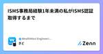
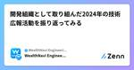

WealthNavi Engineering Blogのフィード
https://zenn.dev/p/wn_engineering
ウェルスナビの開発に関する記事を定期的に発信しています。 「ものづくりする金融機関」への取り組みを知っていただければ幸いです。
フィード
Qodanaによる静的コード解析導入とガイドラインを整備した
WealthNavi Engineering Blogのフィード
WealthNavi アドベントカレンダー 10日目です。本日は 入社して1つ目のタスクとして行ったQodanaという静的コード解析の導入とガイドラインを整備した話となります。 QodanaとはQodanaはJetBrainsが提供している静的コード解析サービスです。類似のサービスにはSonarQubeやCodacyなどがあるかと思います。公式サイトによると以下の特徴をもっています。2500以上のコードチェックQodana の広範なインスペクションポートフォリオを使用して、パフォーマンスの問題、潜在的なバグ、未使用の宣言、わかりにくいコードコンストラクト、命名規則とス...
3時間前
Auroraアップデートのユニットテストで直面した2つの問題
WealthNavi Engineering Blogのフィード
初めまして、今年4月に新卒としてウェルスナビにJOINしたバックエンドグループの藤原です。今回はAuroraアップデートのユニットテストで直面した2つの問題についてお話ししたいと思います。 Auroraのアップデートについて弊社では、データベースにAurora 2系（MySQL 5.7）を使用して開発を進めています。しかし、Aurora 2系は2024年10月31日に標準サポートが終了するため、現在、Aurora 3系（MySQL 8.0）への移行準備を進めています。 ユニットテストの作成/実施移行準備の一環として、新卒はSpringのRepositoryに関するユニッ...
1日前
金融未経験からウェルスナビバックエンドエンジニアへ
WealthNavi Engineering Blogのフィード
はじめに皆さん、こんにちは！ロボアド開発グループ サービス機能開発チームのユダです。現在、ウェルスナビでサービスサイトとAPIの開発に携わるバックエンドエンジニアとして働いています。ウェルスナビは私にとって3社目の職場ですが、金融業界で働くのはこれが初めてです。今回は、金融未経験だった私がどのようにしてウェルスナビに転職し、エンジニアとして成長してきたかをお話ししたいと思います。これまでの経歴や、入社後に感じた変化や挑戦についても共有しますので、ぜひ最後までお付き合いください。 今までの経歴ウェルスナビに入社するまでは色々ありましたので、少し経歴の話をさせてください！ ...
2日前
CloudFront経由のリクエストのみに制御する3つの手法
WealthNavi Engineering Blogのフィード
始めにはじめまして、2024年4月より新卒入社しました、システム基盤チームの安藤と申します。今回は、業務効率化を目指したAIアシスタント（チャットボット）基盤の構築において、CloudFrontを活用してオリジンへの直接アクセスを禁止する方法についてご紹介します。弊社では、社内ITサポートを提供するためのSlackチャンネルが存在し、社員がITに関する質問やサポートを求める際に活用されていますが、社員数の増加に伴い、質問に回答する担当者の負担が増加しているという課題がありました。この問題を解決するために、過去の質問内容や社内ドキュメントをBedrockを活用してナレッジベース...
3日前

ISMS事務局経験1年未満の私がISMS認証取得するまで
WealthNavi Engineering Blogのフィード
初めまして初めまして、ウェルスナビ きど と申します！ISMSの推進業務や情報セキュリティに関連した業務・研修をやってます！ この記事で紹介する内容ウェルスナビは今年の7月にISO/IEC 27001・27017認証（以後ISMS認証と記載します）登録を完了しました！この記事では「ISMS事務局をやったことあるが、いつもやってる作業がISMSの何と関係してるのかわからない！」「審査時に管理策番号で質問されてどんな回答何の資料出せばいいか戸惑ってしまう」「審査時期には各方面から不安や不満の声が漏れ聞こえるのでどうにかしたい」みたいな人の助け舟になるかもしれない施策と...
4日前
バックエンドエンジニア志望がフロントエンド業務を行ってみて 1
1
WealthNavi Engineering Blogのフィード
はじめにこんにちは、ウェルスナビの土本です。私は今年の4月に新卒として、バックエンド / インフラエンジニア志望としてウェルスナビに入社しました。しかし、IT研修などを通して主にWebフロントエンド業務を担当するWebフロント開発チームを志望し、配属となりました。この記事では、バックエンドエンジニア志望がなぜフロントエンドエンジニアを志望したのか、また開発を通じて得られたこと、バックエンド開発とフロントエンド開発で感じた違い、今後の課題などについて紹介させていただきます。バックエンドエンジニア志望だったけど、フロントエンド開発に興味が出てきたあなたに... Webフロント...
5日前

開発組織として取り組んだ2024年の技術広報活動を振り返ってみる 1
WealthNavi Engineering Blogのフィード
はじめにみなさん、こんにちは！ウェルスナビで技術広報を担当しているshoheiです。アドベントカレンダー4日目の今日は技術の話から少し離れて、2024年に開発組織として取り組んだ技術広報活動を振り返ってみたいと思います。 ウェルスナビにおける技術広報の歴史ウェルスナビではもともと、エンジニア・デザイナーの有志メンバーが集まってLT大会やブログの執筆、公開に取り組んでいました（← 現在の技術広報の前身）。ただ、「有志」ということもあり、主務である開発業務やデザイン業務が逼迫しているときは主務を優先していたため、不定期の活動になっていました。2023年5月に私が入社し、当時...
6日前
k6で始めるパフォーマンステスト
WealthNavi Engineering Blogのフィード
はじめに今年新卒で入社し、エンジニアとして働き始めた中西です。パフォーマンステストを行っていく中でk6の良さを知ったので、共有します。 パフォーマンステストとは全体を通して速度や品質などの性能がどの程度かを測るテストのことです。ボトルネックを発見し、修正することでソフトウェアの品質を高めることができます。有名なテストに、負荷テスト、ストレステスト、スパイクテストなどがあります。 k6とは 概要k6とは、オープンソースの負荷テストツールです。パフォーマンステストを毎回手動でやっていては面倒に感じられるものでもあります。そんな中でも、k6であれば自動化することが...
7日前

モバイルアプリ「チーム」になるまでの軌跡
WealthNavi Engineering Blogのフィード
はじめにウェルスナビでiOSアプリ開発を担当している長（ちょう）です。ウェルスナビには2023年6月に入社しました。私の入社時点でモバイルアプリチームは存在していたものの、エンジニアの人数も少ない状態でした。そんな少人数のモバイルアプリチームが、どのようにしてチームとして成長していったのか、その軌跡をお話しします。 モバイルアプリチームの誕生前述の通り、私の入社時点でウェルスナビにはモバイルアプリチームが存在していましたが少人数でした(iOSエンジニア:2, Androidエンジニア: 1)。そこからチーム責任者も入社し、エンジニアの人数も増えて、新生モバイルア...
8日前
ウェルスナビのAssociate VPoEの役割と今後について
WealthNavi Engineering Blogのフィード
ウェルスナビ（以下WN）で2023年12月からAssociate VPoE（以下A.VPoE）を担っている伊代田です。早いものでA.VPoEとしてちょうど１年が経ちました。この記事では、WNでのA.VPoEとはどういう役割で何をめざしているのかを、2024年の取り組みを交えて紹介します。この記事を通して、少しでもWNの開発組織に興味を持っていただけると嬉しいです。 ウェルスナビにおけるA.VPoEという役割CTOやVPoEなど、一般的な開発組織のポジション名でも、各社においての役割や責任範囲は変わります。また、組織の成長に伴って同じポジション名でも求められる役割は変化してい...
9日前
2024年もアドベントカレンダー企画を実施します！
WealthNavi Engineering Blogのフィード
はじめにみなさん、こんにちは！ウェルスナビで技術広報を務めているshoheiです。2024年も残り1ヶ月ほどとなりました。みなさまにとって2024年はどんな一年だったでしょうか？今年はウェルスナビにとっても様々な出来事がありました。2024年が始まってすぐに、中核事業でもあるロボアド事業では皆様からお預かりさせていただいている資産額が1兆円を突破しました。4月にはウェルスナビ初の新卒エンジニアも11名入社し、5月と7月には新規サービスを世にリリースしたり。ウェルスナビでは今年を締めくくる企画として、昨年に続き開発者ブログでのアドベントカレンダー企画を実施します！12月...
13日前
DroidKaigiに初めてスポンサーとして参加しました
WealthNavi Engineering Blogのフィード
はじめにみなさん、初めまして。ウェルスナビで技術広報を担当しているshoheiです。2024年9月に開催されたDroidKaigiに初めてスポンサー企業として参加し、ブース出展させていただきました。本ブログでは、イベントブース出展に向けた準備からイベント当日の様子までをまとめていきたいと思います。実際にDroidKaigi 2024に参加した弊社エンジニアメンバーの声も載せてますので、来年以降DroidKaigiでのブース出展やイベント参加を検討なさっている方に届けば嬉しいです。 DroidKaigiとはDroidKaigiとは、Android技術情報の共有とコミュニ...
1ヶ月前
EKS Fargate Podsを自動停止する仕組みを実装してみる
WealthNavi Engineering Blogのフィード
はじめにはじめまして、3月にウェルスナビへ新しくジョインしたシステム基盤チームでSREをしている森と申します。日々の業務で取り組んだことについて紹介いたします。ここ数年でドル円相場の円安基調が続いております。５年ほど前は1ドル110円程度でしたが、今年に入り150円~160円ほどまで上昇することもありました。https://www.bk.mufg.jp/tameru/gaika/realtime/chart.htmlAWSなどの海外サービスを利用していると支払いはドル建てであることが多いため、円安によりコストが増大してしまいます。今回はコスト最適化の1つとしてEKS F...
2ヶ月前
ウェルスナビの新卒エンジニアが開発研修をどう進めたのか チーム開発編
WealthNavi Engineering Blogのフィード
はじめにみなさま、こんにちは！！サービス機能開発チームに配属された24卒の尾形です。今年の新卒研修では、新卒同士がチームを組み、お題に対して開発を行うチーム開発研修が行われました。この記事では、そのチーム開発研修の中で得られた学びや感想を紹介をします。 チーム開発研修の概要新卒11人が2つのチームに分かれ、出されたお題を2週間で開発しました。与えられたお題は「プロジェクト管理ツール」で、これに関するシステム要件が提示されました。それ以外の詳細な仕様や設計については、私たちが全て決定することになりました。開発の最後には、各チームが成果物を発表するLT大会が開催されまし...
2ヶ月前
SRE NEXTに参加してきました
WealthNavi Engineering Blogのフィード
はじめにはじめまして。今年3月にウェルスナビのシステム基盤チームに新しくジョインしたSREの森と申します。今回がジョイン後初めてのテックブログ執筆となります。 序論2024年8月3日(土)~8/4(日)にSRE NEXT 2024 IN TOKYOが開催されました。https://sre-next.dev/2024/弊社ウェルスナビもSRE NEXT 2024にスポンサードしており、スポンサー枠としてオフライン開催場所のAbema Towers[1]へ参加してきました。シルバースポンサーとしてロゴが紹介された1日目、2日目とフルで参加しましたので現地の様子を紹介いた...
3ヶ月前
ウェルスナビはiOSDC Japan 2024にゴールドスポンサーとして参加します
WealthNavi Engineering Blogのフィード
今年もスポンサーを務めさせていただきますみなさま、こんにちは！ウェルスナビでHRBPやDevRelを担当しているshoheiです。ウェルスナビは8月22日から開催されるiOSDC Japan 2024にゴールドスポンサーとして参加いたします！iOSDC Japan 2024はiOS関連技術をコアスキルとするソフトウェア技術者のためのカンファレンスです。ウェルスナビは昨年からイベントスポンサーとして参加させていただいております。https://iosdc.jp/2024/本イベントでは、弊社モバイルアプリ開発チーム所属 iOSエンジニア 長(@eh6gac4)がセッション...
4ヶ月前
サイバーセキュリティチーム立ち上げにあたり考えたこと
WealthNavi Engineering Blogのフィード
前回のブログ冒頭で記載した通り、弊社では今年からサイバーセキュリティチームを立ち上げました。今回はチーム立ち上げにあたって考えたことを共有します。 目指す姿〈Vision〉目についた課題に対処するだけでは中長期的な成長は望めません。チームとして目指すべき到達点、Visionが抽象的なレベルでもあると、活動の軸になりますし、チームとして自分たちが前進していることを実感できると思います。では、どういったVisionがよいか。当チームでは、『The Sliding Scale of Cyber Security』[1]を採用しました。このモデルではサイバーセキュリティの防御態勢を大きく...
5ヶ月前
Slack AIを導入した後のリアルな感想
WealthNavi Engineering Blogのフィード
はじめにこんにちは、ウェルスナビの深田です。普段は、社内 IT・社内セキュリティ（いわゆる情シスやコーポレート IT ）を担当しています。2018年11月にウェルスナビに入社し、現オフィスへの移転、上場対応、ゼロトラストセキュリティプロジェクト等を対応し現在に至ります。直近では今秋に移転予定のオフィスに関する IT 全般（ネットワーク、監視カメラ、入退室システム、PBX 等）を担当しています。 本記事では、Slack AI の概要や導入の経緯、実際に Slack AI を導入したあとの感想等を記載します。同じ課題を持たれる方の参考になれば幸いです。 対象読者Sl...
5ヶ月前
【詳細編／前編】WealthNaviのサービスを支える外部サービスについて
WealthNavi Engineering Blogのフィード
はじめにウェルスナビの開発推進チームにおりました隅田と申します。現在はITガバナンスチームと名前が変わりました。2023/12に、「【概要編】WealthNaviのサービスを支える外部サービスについて」という記事を公開させていただきましたが、おかげさまで当社のアドベントカレンダーの中で最も多くの「いいね」を頂くことができました。ありがとうございました。本記事は、その際にお伝えしていた【詳細編／前編】となります。こうして世に出せることを喜ばしく思っています。以下、【概要編】の前置きとも被りますが、金融システムは、様々なシステムと接続して成り立つのが一般的です。例えば、銀行の...
7ヶ月前
脅威モデリングを参考に、社内全体のセキュリティリスク可視化を試みた話
WealthNavi Engineering Blogのフィード
サイバーセキュリティチームでマネージャーをしている岡地と申します。本記事では、いま話題（！？）の脅威モデリングを参考に実施した、社内のセキュリティリスク分析について紹介させて頂きます。 サイバーセキュリティチームについて私は2022年12月にウェルスナビにジョインし、2023年はコーポレートIT部門でセキュリティ担当として従事してきました。2024年1月からサイバーセキュリティチームとして独立し、チーム戦略の策定から始めているのですが、その中で改めて感じたのが、自社のリスク認識の解像度が不十分だということです。別の表現でいうと、自社のセキュリティのカタチがいまいちわからない状態でし...
7ヶ月前